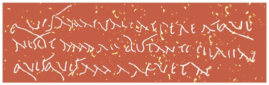

INTER POCVLA
I
Nōn sōlum dē cibō et pōtiōne est sermō convīvārum. Iūlius hospitēs suōs dē rēbus urbānīs interrogat: “Quid novī ex urbe? Octō diēs iam sunt cum Rōmae nōn fuī, nec quisquam interim mihi litterās inde mīsit. Quam ob rem nec ipse praesēns nec abssēns per litterās quidquam cognōvī dē eō quod nūper Rōmae factum est.”
Aemilia: “Nēmō tibi quidquam scrībet dē rēbus urbānīs, nisi prius ipse epistulam scrīpseris.”
Orontēs: “Opus nōn est epistulās exspectāre, nam facile aliquid novī per nūntiōs cognōscere potes. Cūr nōn servum aliquem Rōmam mittis?”
Iūlius: “Servī sunt malī nūntiī: saepe falsōs rūmōrēs nūntiant. Numquam servōs meōs Rōmam mittō.”
Cornēlius: “Quid? Herī quendam servum tuum vīdī in viā Latinā. Faciem recognōvī, saepe eum hīc vīdī.”
Iūlius ā Cornēliō quaerit ‘quod nōmen eī sit?’
Cornēlius: “Aliquod nōmen Graecum, putō. ‘Midās’ fortasse, nec vērō certus sum. Semper nōmina oblīvīscor, nam mala memoria mihi est.”
Orontēs: “Midās est nōmen rēgis, dē quō haec fābula nārrātur: In quādam urbe Asiae ōlim vīvēbat rēx quīdam avārus, nōmine Midās, quī nihil magis optābat quam dīvitiās...”
Iūlius, quī fābulam audīre nōn vult, Orontem interpellat: “Nōn Midās,” inquit, “sed Mēdus est nōmen cuiusdam servī meī, quī herī...”
Orontēs vērō, minimē turbātus, nārrāre pergit: “Tum Bacchus deus, quī ob quoddam beneficium rēgī bene volēbat, ‘Dabō tibi,’ inquit, ‘quidquid optāveris.’ Statim Midās ‘Ergō dā mihi,’ inquit, ‘potestātem quidquid tetigerō in aurum mūtandī. Hoc sōlum mihi optō.’ Bacchus, etsī rēgem avārum mūnus pessimum optāvisse cēnsēbat, tamen prōmissum solvit.”
Iūlius impatiēns “Tacē, Orontēs!” inquit. “Omnēs illam fābulam nōvimus.”
At Aemilia, quae fābulam ignōrat, ab Oronte quaerit ‘quamobrem id mūnus pessimum sit?’
Cui Orontēs “Stultē id quaeris,” inquit, “Midās enim, quamquam terram, lignum, ferrum manū tangendō in aurum mūtāre poterat, fame et sitī moriēbātur, cum cibus quoque et pōtiō, simul atque ā rēge tācta erat, aurum fieret. Postrēmō rēx miser deum ōrāvit ut mūnus illud īnfēlīx revocāret. Bacchus igitur eī suāsit ut in quōdam flūmine lavārētur; cuius flūminis aqua, simul atque corpore rēgis tācta est, colōrem aureum accēpit.”
Iūlius: “Hicne fīnis fābulae est?”
Orontēs: “Huius quidem fābulae fīnis est, sed aliam fābulam dē eōdem rēge nōvī. Deus Apollō effēcerat ut Midās aurēs asinīnās habēret...”
Iūlius: “Satis est! Fābulās tuās Graecās audīre nōlumus. Redeāmus ad meum Mēdum servum, quī herī aufūgit aliquantum pecūniae sēcum auferēns.”
Cornēlius: “Quantum pecūniae abstulit?”
Iūlius: “Centum circiter sēstertiōs. Atque ego illī servō praeter cēterōs fīdēbam! Posthāc servō Graecō nūllī cōnfīdam, neque enim fidē meā dignī sunt: īnfīdī et nēquam sunt omnēs! In familiā meā ūnum sōlum servum fīdum esse crēdō.”
II
Hīc Aemilia marītum interpellat et “St, Iūlī!” inquit. “Nōlī servum praesentem laudāre!”
Iūlius Dāvum cōnspiciēns “Sed is servus adest,” inquit. “Nōlō eum laudāre praesentem. Mēdus vērō plānē īnfīdissimus omnium est. Profectō eum verberābō atque omnibūs modīs cruciābō, sī eum invēnerō priusquam Italiam relīquerit. Nisi pecūniam mihi reddiderit, in cruce fīgētur!”
Cornēlius: “Etiam sī adhūc Rōmae latet, difficile erit servum fugitīvum in tantā urbe reperīre. Rōmae enim tot servī sunt quot hominēs līberī.”
Aemilia: “Fortasse Rōmam abiit ob amōrem alicuius mulieris. Iuvenis est Mēdus: quid nōn faciunt iuvenēs amōris causā? Crēdō eum apud puellam Rōmānam latēre.”
Orontēs: “Ergō numquam reperiētur, nam vērum est quod scrīpsit Ovidius in librō quī vocātur ‘Ars amandī’:
Quot caelum stēllās, tot habet tua Rōma puellās.”
Iūlius: “Profectō magnum praemium dabō eī quī servum meum fugitīvum hūc retrāxerit.”
Cornēlius: “Quantum pecūniae dabis? Certum praemium statuere oportet.”
Iūlius: “Tantum quantum ille surripuit.”
Orontēs: “Centum tantum sēstertiōs? Sānē nōn nimium praemium prōmittis!”
Aemilia autem marītō suō suādet ut clēmēns sit: “Nōlī Mēdum cruciāre, sī eum invēneris. Clēmēns estō, mī Iūlī! Centum sēstertiī haud magna pecūnia est, ut ait Orontēs, nec aliud quidquam surripit Mēdus.”
Iūlius: “An cēnsēs eum praemium meruisse quod manūs abstīnuit ā gemmīs tuīs? Nimis clēmentēs sunt mulierēs: quam facile virīs nēquissimīs ignōscunt! At nostra melior est memoria!”
Aemilia: “Nōvistīne hoc dictum: ‘Dominō sevērō tot esse hostēs quot servōs’? Servī enim dominum clēmentem amant, sevērum ōdērunt.”
Iūlius: “Servī mē metuunt quidem, nec vērō ōdērunt. Nec enim umquam sine causā servum pūnīvī. Sum dominus iūstus. Servus dominum iniūstum ōdit, iūstum et sevērum metuit, nōn ōdit. Nē servō quidem iniūriam facere oportet, sed necesse est servōs īnfīdōs aut fugitīvōs sevērē pūnīre, nec enim quidquam nisi poena sevēra eius generis servōs ā maleficiīs dēterrēre atque in officiō tenēre potest. Neque quisquam mē accūsābit sī servum meum cruciāverō aut interfēcerō, id enim est iūs dominī Rōmānī. Servum aliēnum necāre nōn licet, ut scrīptum est in lēgibus, nec vērō ūlla lēx dominum vetat servum suum improbum interficere.”
Cornēlius: “Nec ūlla lēx id permittit. Nōn idem est permittere ac nōn vetāre. Solō, vir sapiēns et iūstus, quī Athēniēnsibus lēgēs scrīpsit, nūllam poenam statuit in parricīdās. Num ideō cēnsēs cīvī Athēniēnsī licuisse patrem suum necāre?”
Iūlius: “Ita sānē nōn cēnsēō. At quamobrem Solō nūllam poenam in parricīdās statuit? Quia nēmō Athēniēnsis umquam post hominum memoriam patrem suum occīderat, nec ille vir sapientissimus arbitrābātur quemquam posteā tam inhūmānum scelus factūrum esse. At profectō aliud est patrem suum necāre, longē aliud servum scelestum capite pūnīre: illud enim turpissimum scelus, hoc supplicium iūstum est. Ōlim iūs erat patrī familiās nōn modo servōs, sed etiam līberōs suōs interficere. Eius reī exemplum memorātur Titus Mānlius Torquātus, quī fīlium suum cōram exercitū necārī iussit, quia contrā imperium patris cum hoste pugnāverat! Sānē pater crūdēlis fuit Mānlius, sed illō suppliciō sevērissimō cēterī mīlitēs dēterrēbantur nē officium dēsererent.”
Aemilia: “Nōtum est veterēs Rōmānōs etiam ergā līberōs suōs crūdēlēs fuisse, nec vērō quisquam hodiē exemplum sūmit ab illō patre crūdēlissimō.”
Orontēs: “At etiam nunc patrī licet īnfantem suum invalidum in montibus expōnere.”
III
Aemilia: “Pater quī īnfantem exposuit ipse necandus est! Nōnne tālis pater tibi vidētur cruce dīgnus esse?”
Iūlius: “Certē pater tam inhūmānus sevērē pūniendus est, namque īnfantēs invalidōs expōnere est mōs antīquus atque crūdēlis. Aliī nunc sunt mōrēs. Vērum hominem līberum crucī fīgere nōn est mōs Rōmānōrum; id supplicium in servōs statūtum est.”
Aemilia: “Ergō quī īnfantem suum dēbilem ad ferās expōnī iussit, ipse ad bēstiās mittendus est cum aliīs hominibus scelestīs!”
Orontēs: “...et cum Chrīstiānīs istīs quī quendam hominem Iūdaeum tamquam novum deum adōrant, deōs veterēs Rōmānōs dērīdent. In convīviīs suīs sanguinem hūmānum bibere solent, ut rūmor est.”
Aemilia: “Nōn omnēs vērī sunt rūmōrēs quī afferuntur super Chrīstiānīs.”
Fabia: “Nec omnēs īnfantēs expositī pereunt. Aliī in silvīs ab ipsīs ferīs aluntur, aliī inveniuntur ā pāstōribus, quī eōs cum līberīs suīs ēducant.”
Orontēs: “Sīcut Paris, rēgis Priamī fīlius dēbilis, quī ā servō rēgis fīdō in quōdam monte prope urbem Trōiam expositus...”
At Cornēlius “Opus nōn est,” inquit, “vetus exemplum Graecum afferre, cum complūrēs fābulae nārrentur dē Rōmānīs puerīs quī ita servātī sunt. Cēterum fābulam male intellēxistī, nec enim dēbilis fuit Paris nec fīdus servus Priamī, nam rēx eī imperāverat ut Paridem interficeret, et quidquid dominus imperāvit, servō faciendum est.”
Orontēs: “Ille servus nōn pūniendus, sed potius laudandus fuit: namque ita Paridem servāvit — eum quī posteā Helenam, fēminam omnium pulcherrimam, ā marītō Menelāō abdūxit.”
Paula: “Num tantam iniūriam laudandam esse cēnsēs?”
Orontēs: “Quod Venus suādet iniūria nōn est! Sānē laudandus est ille iuvenis quī nōn modo fēminam illam pulcherrimam abdūcere ausus est, sed etiam mīles fortissimus fuit, quī et multōs aliōs hostēs et ipsum Achillem occīdit.” Hīc pōculum tollit Orontēs et exclāmat: “Vīvat fortissimus quisque! Vīvant omnēs fēminae amandae! Gaudeāmus atque amēmus! Iuvenēs sumus ut Paris, nōn senēs ut Priamus, rēx Trōiānōrum, aut Nestor, dux Graecōrum senex, quī ad nōnāgēsimum annum vīxit. Quisquis fēminās amat, pōculum tollat et bibat mēcum! Nunc merum bibendum est!”
Cornēlius: “Tacendum est, nōn bibendum! Iam nimium bibistī. Cēnseō tē ūnum tantum vīnī bibisse quantum nōs omnēs, vel potius alterum tantum!”
Orontēs: “Vōs igitur parum bibistis. Numquam nimium huius vīnī bibere possum. Valeat quisquis vīnum bonum amat! Vīvat Bacchus, deus vīnī! Vīvāmus omnēs et bibāmus! Pōcula funditus exhauriāmus!”
Paula: “Iam tacē! Satis est. Nōnne tē pudet ita ab ōvō ūsque ad māla fābulārī? Sānē pudendum est!”
Orontēs autem, simul atque pōculum suum funditus exhausit, ā Paulā ad Aemiliam versus “Omnēs m-mē interpellant,” inquit, “praeter t-tē, Aemilia. Tū t-tam p-pulchra es quam Helena...”
Aemilia: “...et tū tam rūsticus quam Paris, quī inter rudēs pāstōrēs ēducātus erat! Numquam mōrēs urbānōs didicistī, rūstice! Nimium pōtāvistī, ēbrius es. Abstinē manum ā mē!”
Orontēs iterum pōculum tollēns haec cantat:
“Quisquis amat valeat! Pereat quī nescit amāre!
Bis tantō pereat quisquis amāre vetat!”
Aemilia: “Nōlumus istās nūgās audīre. Ēbrius es!”
Orontēs negat ‘sē esse ēbrium’ atque in lectō surgēns aliud carmen super fēminā falsā et īnfīdā cantāre incipit, sed priusquam fīnem facit, sub mēnsam lābitur!
Duo servī eum ē triclīniō auferunt atque in cubiculō pōnunt. Tum vestem super eum iam dormientem stertunt.

[QVIS]QVIS AMAT VALEAT. PEREAT QVI
NESCIT AMARE. BIS TANTO PEREAT
QVISQVIS AMARE VETAT.
* * *
GRAMMATICA LATINA
Gerundīvum
Vir laudandus. Fēmina laudanda. Factum laudandum.
‘Laudandus -a -um’ gerundīvum appellātur. Gerundīvum est adiectīvum dēclīnātiōnis I/II. Cum verbō esse coniūnctum gerundīvum significat id quod fierī oportet; is ā quō aliquid fierī oportet apud gerundīvum significatur datīvō.
Exempla:
Discipulus industrius magistrō laudandus est. Discipulus piger reprehendendus et pūniendus est. Tacendum est.
Lingua Latīna vōbīs discenda est. Vocābula dīligenter scrībenda sunt. Omnia menda corrigenda sunt: addenda sunt litterae quae dēsunt; quae supersunt stilō versō dēlendae sunt. Quidquid magister imperāvit discipulō faciendum est.
Dominus dīcit ‘ovēs bene cūrandās esse’.
* * *
AD CAPITVLVM